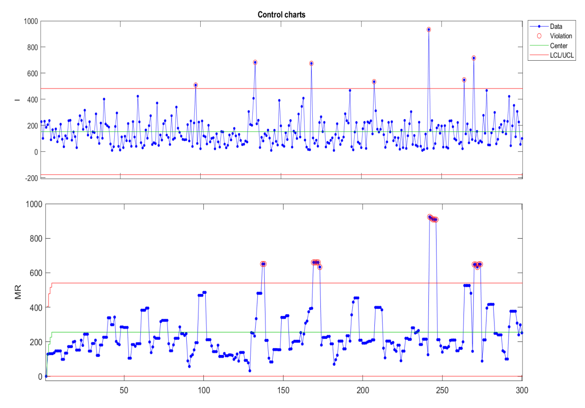
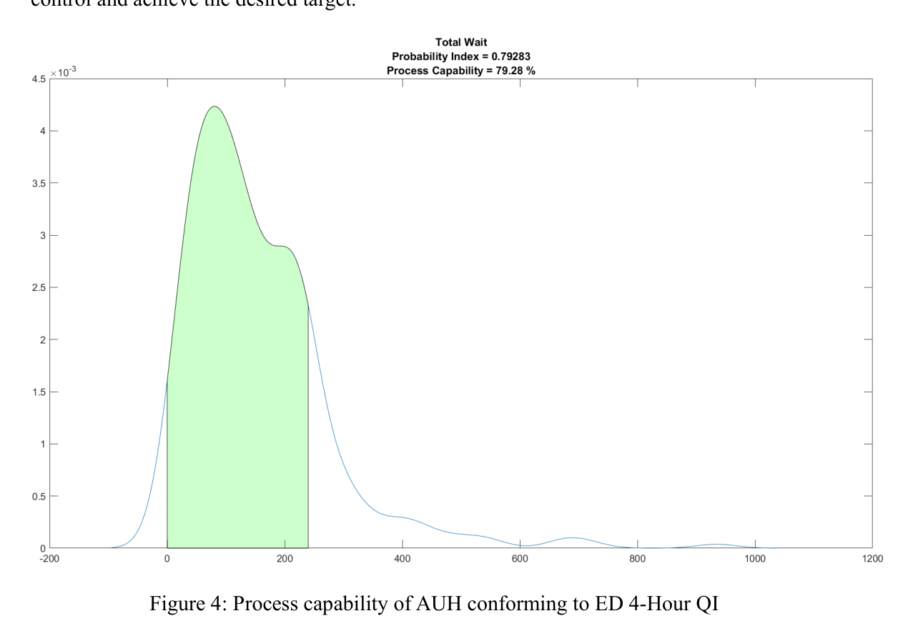
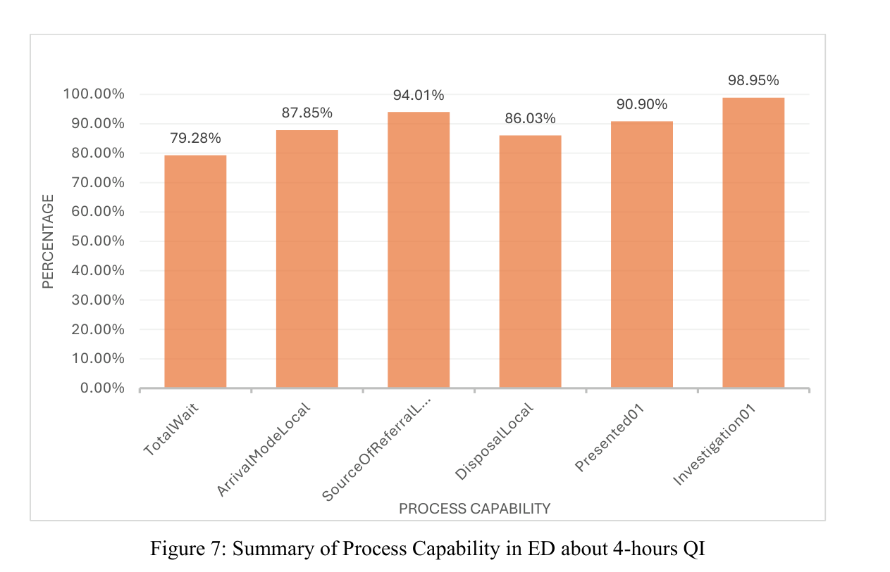
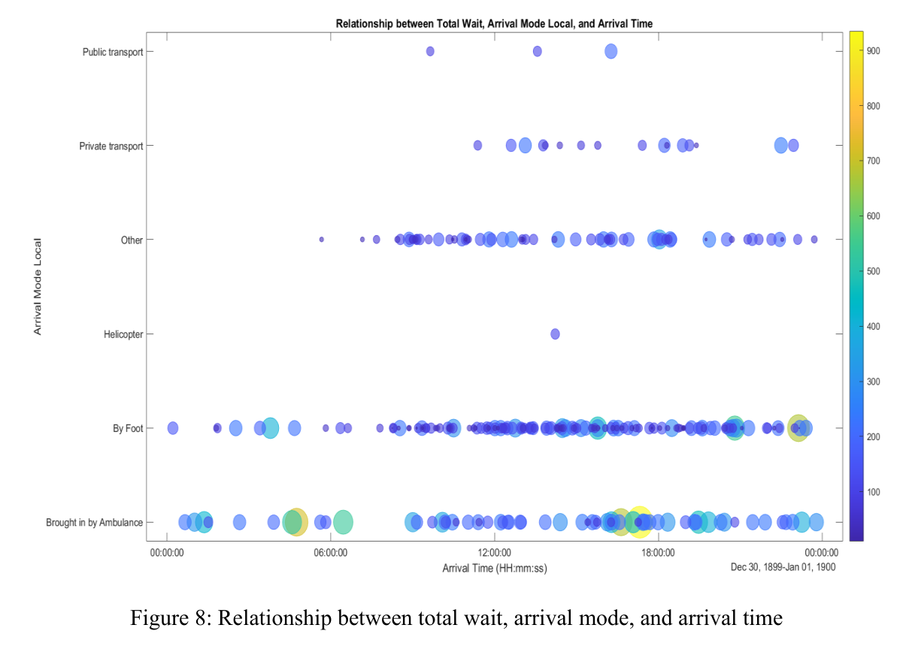
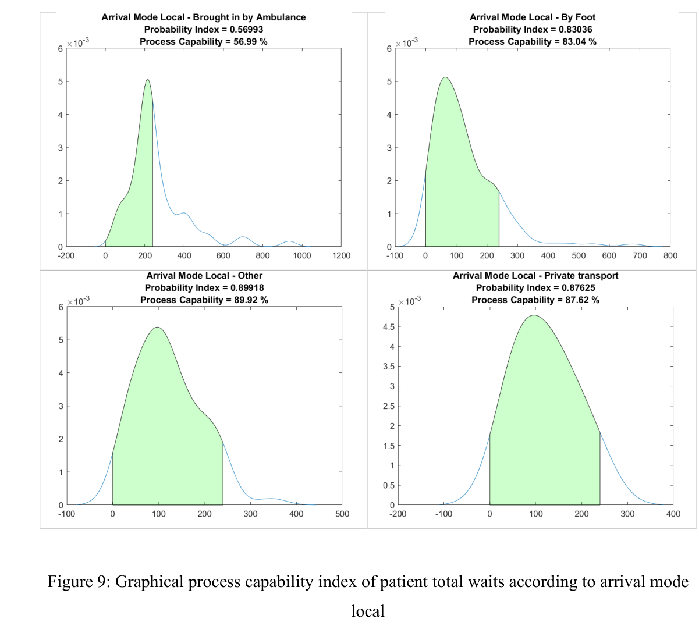
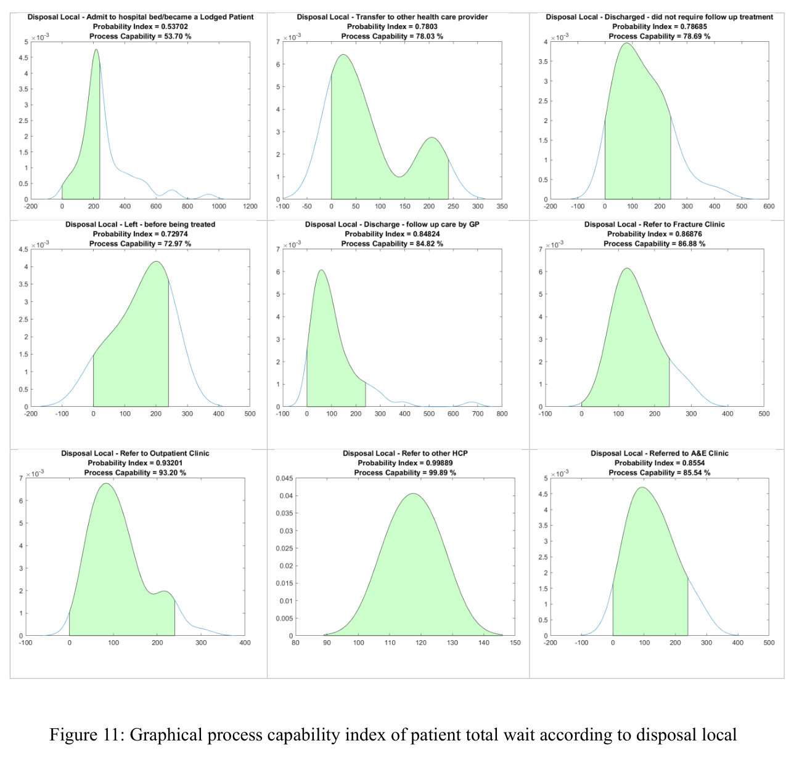

A 1,000-bed acute care hospital handling over 80,000 ED patients a year was falling short of two linked NHS quality indicators: the 4-hour ED standard (95% of patients admitted, transferred, or discharged within 4 hours) and the 90/90 stroke care standard. These aren't just administrative targets. For stroke in particular, minutes matter for long-term recovery, and the two indicators interact: delays in the ED can cascade into delays for time-critical stroke patients.
I mapped and compared the hospital's actual stroke-care protocol against national guideline flowcharts to identify where extra handoffs and decision points were adding risk of delay. In parallel, I analysed the hospital's ED attendance dataset in MATLAB: building statistical process control (SPC) charts to check whether wait times were "in control," calculating process capability indices against the 4-hour upper specification limit, and testing normality of the wait-time distribution (Anderson-Darling). I then broke total wait down by process stage, arrival mode, source of referral, and disposal pathway to isolate exactly where the 4-hour target was being lost, and ran Spearman's rank correlation on the separate stroke dataset to check how patient and pathway variables related to timely stroke ward admission.






The data made clear that the ED's 4-hour problem wasn't really an "ED" problem in isolation; it was concentrated in exactly two places: how ambulance and walk-in patients are triaged on arrival, and how quickly a hospital bed becomes available once a decision to admit is made. That reframed my recommendations: dedicated care pathways and prioritised triage for ambulance/walk-in arrivals, plus a bed-capacity and disposal-pathway review, rather than a generic "speed up the ED" intervention. I also proposed an ED–Radiology pre-alert system and stroke-specific registration to shorten the stroke pathway, since the same arrival-mode and bed-availability pressures that hurt the 4-hour target also delay stroke patients reaching the specialised unit in time for the 90/90 indicator. It reinforced for me that process capability analysis is only useful once you decompose it by pathway: the aggregate number tells you there's a problem, but the breakdown tells you where to intervene.